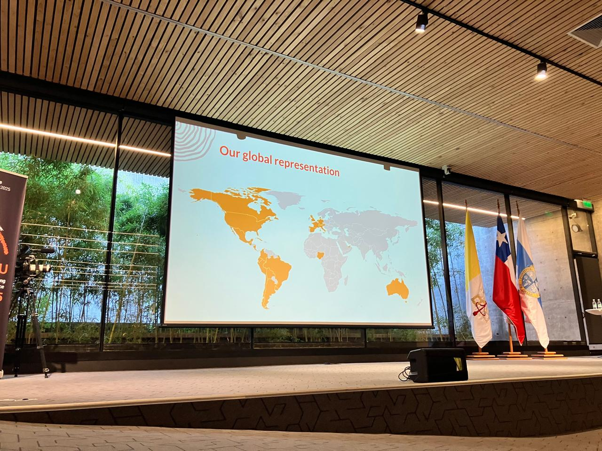

Asístí a Khipu 2025!🎉️
A principios de este mes, tuve la oportunidad de asistir a Khipu, la conferencia de Inteligencia Artificial (IA) y Aprendizaje Automático más grande de América Latina.

Este año fue la cuarta edición de Khipu y la primera en realizarse fuera de Uruguay. Tuvo lugar en Santiago de Chile, reuniendo a cientos de investigadores, profesionales y estudiantes de toda la región (y fuera de ella también).

Khipu es mucho más que una conferencia: es un espacio para aprender, compartir y construir comunidad en torno a la IA en América Latina. El programa está cuidadosamente diseñado para ofrecer contenidos a una una audiencia muy variada. Las charlas siguen una estructura progresiva: las sesiones iniciales fueron más generales y accesibles, aunque rigurosas y siempre a cargo de personas expertas, y, a medida que fue avanzando la semana, los contenidos se volvieron más técnico y especializado.
Por ejemplo, algunas de las charlas que más disfruté fueron Fundamentos de Machine Learning y Deep Learning I por Jorge Pérez, Fundamentos de ML y DL II por Alfredo Canziani, y Fundamentos de Procesamiento de Lenguaje Natural por Isabelle Augenstein. El segundo día, Petar Veličković dio una excelente presentación sobre Geometric Deep Learning. El jueves tuvimos sesiones paralelas sobre ciberseguridad, aprendizaje automático en economía, visión por computadora, IA y derechos humanos, entre otros temas.
La conferencia también ofreció tutoriales de distintos niveles de dificultad sobre temas como aprendizaje automático, procesamiento de lenguaje natural, ética en IA, entre otros. Los materiales estaban cuidadosamente preparados, incluyendo Jupyter notebooks bien documentadas que podías llevarte y seguir explorando por tu cuenta. También hubo sesiones de pósters, donde las y los asistentes podían presentar sus trabajos y recibir feedback en un ambiente amigable.
Una de las cosas que más me llamó la atención fue el clima cálido y amigable. Es un excelente lugar para conocer personas que trabajan con IA en distintos sectores, explorar colaboraciones y sentirse parte de una comunidad latinoamericana en crecimiento.
✍️ ¿Estás pensando en asistir a la próxima edición?
Quizás te estés preguntando cómo hacer para asistir a la próxima edición de Khipu. A diferencia de muchas conferencias, no se trata simplemente de registrarse y pagar una inscripción. En su lugar, se aplica contando tu trayectoria, motivación y qué esperás aportar o aprender. Si tu aplicación es aceptada, también podés solicitar apoyo económico para cubrir gastos de viaje y alojamiento. El objetivo es eliminar barreras económicas para que participar sea accesible para todes.
¿Y qué hace que una aplicación sea buena? No lo sé con certeza—quizás debería haberle preguntado a alguien del comité organizador—pero pienso que se valora tu potencial para compartir lo que aprendas y actuar como multiplicador en tu comunidad. Si sos docente o participás en comunidades de práctica, eso probablemente sume, no dejes de mencionarlo. Si estás trabajando en proyectos que requieren IA y podrían beneficiarse de tu participación en la conferencia, da detalles al respecto, incluí enlaces a recursos o repositorios relevantes.
🌐 ¿Tengo que saber inglés?
Una limitación importante de Khipu es que todo es en inglés. Este año el equipo organizador incorporó subtítulos automáticos, lo cual definitiviamente ayuda si el inglés no es tu idioma nativo, pero todavía no es un evento que recomendaría a alguien sin conocimientos del idioma. Dicho esto, el equipo claramente es consciente de esta barrera. Khipu está pensado para Latinoamérica y hay un interés genuino en hacerlo más accesible para personas que no hablan inglés en el futuro.
Lo que me llevé
Aprendí muchísimo, conocí gente muy interesante, tomé demasiado café y comí demasiada azúcar. Pero, sobre todo, lo que más me quedó fue la dimensión humana: las limitaciones de las tecnologías actuales, y cómo las personas reflexionan críticamente sobre ellas y trabajan para superarlas.
¿Qué pasa cuando trabajás con datos sensibles y privados que no se pueden compartir con modelos grandes en plataformas externas, y tu institución tiene infraestructura y financiamiento limitados? Proyectos como los que presentaron Leonardo Lombardi (QuantIT), Aiala Rosá (Universidad de la República), Victor Mireless (UNAM) y Juan Reutter (PUC, Chile) sobre IA y Derechos Humanos son un claro ejemplo.
¿Qué pasa si necesitás un modelo cuyas decisiones sean comprensibles/explicables? Por ejemplo, en el ámbito médico, donde tanto profesionales como pacientes deberían poder entender la lógica detrás de un diagnóstico? Charlas como la de René Vidal (Universidad de Pensilvania) sobre explicabilidad abordaron ese tema.
Otras sesiones exploraron temas críticos como los sesgos y la gobernanza de la IA, destacando la importancia de la equidad y la transparencia en el desarrollo e implementación de modelos. Como parte del cierre, hubo una muy interesante sesión sobre equidad de género y mujeres en la IA a cargo de Catherine D’Ignazio (MIT) e Ivana Feldgeber (DataGenero).
En resumen, un recordatorio de que la IA, como cualquier tecnología, no es neutral. Refleja los valores, prioridades y perspectivas de quienes la desarrollan. Por eso son tan importantes espacios como Khipu: para asegurar que América Latina no sea solo consumidora de IA, sino también protagonista en dar forma a su futuro.
Podés ver la mayoría de las charlas en el canal de YouTube de Khipu.